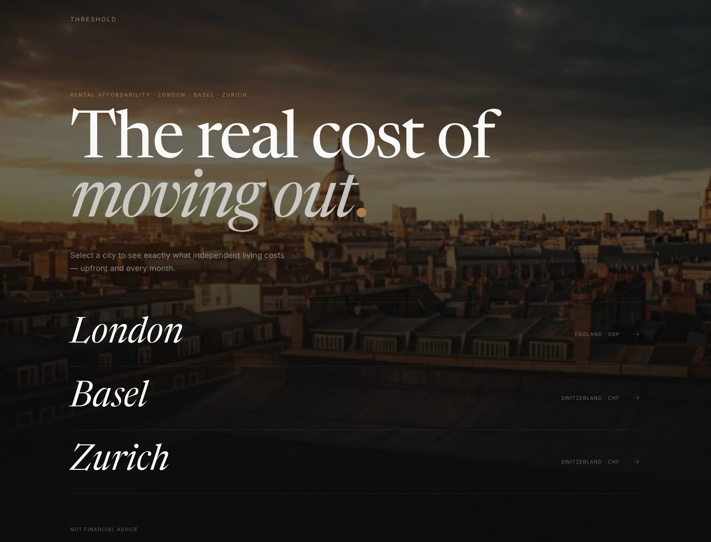

I build pricing and risk engines at BNP Paribas, and products of my own.
I’m the team’s only C# engineer, and the engines run on CPU and GPU. I’ve won the bank’s digitisation competition and a Take Ownership award.
Work
History, then marketing, then code. Each move was towards the work I liked most.
BNP Paribas
Software engineer
Jul 2025 – now
Six months
from zero C# to production code
Integrating a pricer
An experienced engineerabout two weeks
Me, new to ita couple of days
The competition dashboard’s data load
Before30–40 min
Afterunder 5 min
Joveen
Full stack software engineer
Aug 2024 – Jun 2025
−40%
page load
- Key API p95520 ms → 230 ms
- Time to deploy10 min → under 2
- Mobile retention+30%
Optegra
Marketing executive
Sep 2021 – Aug 2024
88%
Core Web Vitals pass rate, up from 62%
- Pass rate62% → 88%
- p95 page load−30%
- Consultation conversion+15%
Where I’m headed
I’m working towards being the engineer a small product team can hand a whole problem to. Three things that takes, and how far I’ve got on each.
- Optegra
Close enough to users to know what’s worth building.
At Optegra, split tests and dashboards guided what the engineers built next.
- BNP Paribas
Knowing it well enough that people can rely on it.
Six months from zero C# to production code, in a pricing engine of around 70 projects.
- Threshold
All the way, from first idea to how it gets used.
Threshold, from 57 user stories to a live site.
Things I make
Threshold
A clearer view of what moving could cost.
- 57user stories
- 182tests
- 3cities

Everything I’ve built (06)How I work
Start from a real problem.
Threshold started because my friends had no clear idea what renting would cost by area. Flowtime started because Pomodoro kept cutting me off mid-flow.
ThresholdFlowtimeWrite it down first.
Before I build, I write down the problem, who it’s for, and what’s out of scope. Threshold had 57 user stories before any code.
57Ship it so it’s safe to undo.
At BNP Paribas, taking a stale data dependency out of live pricing, I put the new path behind a feature flag that defaults to off, with caching and an end-to-end test nobody had asked for.
OffMeasure whether it works.
I learned this in marketing. At Optegra, split tests and analytics dashboards showed which changes brought in consultations and guided what the engineers built next; consultation conversion rose by 15%.
+15%
Off the clock
- M
- T
- W
- T
- F
- S
- S
Lower body gym
Today’s session, from my training week

Dark Age
Now reading · Pierce Brown ↗

Kiss Kiss Bang Bang
Last watched 9 Oct · ★★★½ ↗

Odd but true, from this week in history
1783 The first living creatures to ride in a balloon were a sheep, a duck and a rooster. All three survived the flight at Versailles.
1,939contributions in the past year
Now making · eliasb.dev